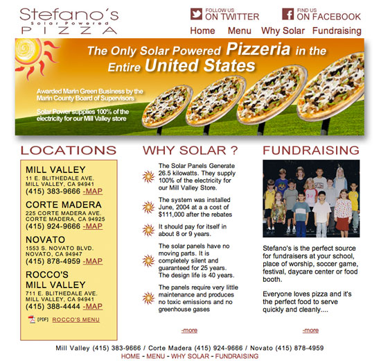
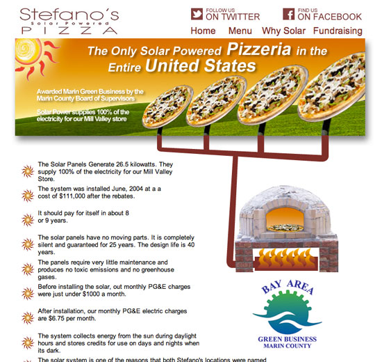
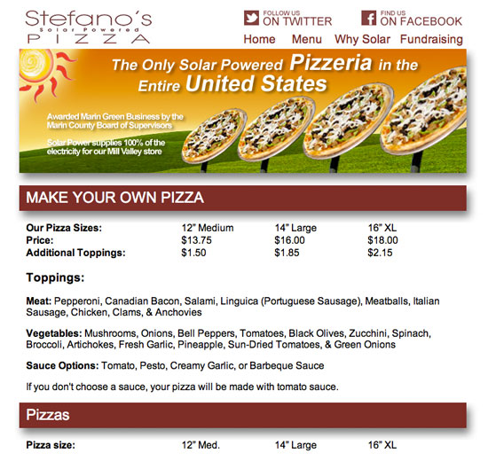
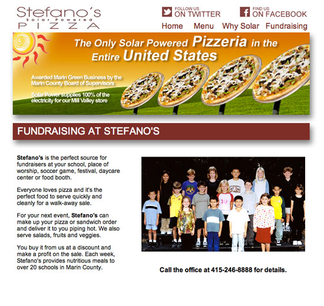

		<!-- START PROJECT -->
		<section id="project-page">
			<div class="container">
				<div class="row">
					<div class="col-md-6">
						<div class="flexslider">
						 	<ul class="slides">
						    	<li></li>
							    <li></li>
							    <li></li>
                                <li></li>
						  	</ul>
						</div><!-- END FLEXSLIDER -->
					</div><!-- END COLUMN 6 -->
					<div class="col-md-6">
						<h3 class="project-title">StefanosSolarPizza.com</h3>
                        <h4 class="project-subtitle">Stefanos Solar Powered Pizza - Mill Valley</h4>
						<p>This project was for a local pizza parlor that prides it’s solar powered pizza oven. I created the graphics to depict the use of the solar power. I enjoyed this project because it was a very localized target market, giving me the opportunity to try to embrace the community’s essence.</p>
						
						<ul class="project-details">
							<li><span>Categories</span> web Design - ui design</li>
                            <li><span>Company</span> Ancient Goose Network</li>
						</ul>
                        
					</div><!-- END COLUMN 6 -->		
				</div><!-- END ROW -->
			</div><!-- END CONTAINER -->
		</section>
		<!-- END PROJECT PAGE SECTION -->
